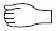
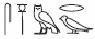
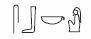
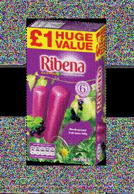
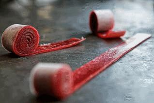

BỊ MỘT CON CÁ SẤU KHỔNG LỒ ĂN THỊT đã là quá tệ rồi.
Một thằng nhóc với thanh gươm phát sáng chỉ khiến cái ngày hôm nay thêm tệ hơn thôi.
Có lẽ tôi nên giới thiệu bản thân.
Tôi là Carter Kane – học-sinh-trung-học-năm-nhất-bán-thời-gian, pháp-sư-bán-thời-gian, chiến-binh-toàn-thời-gian với tất cả các vị thần và quái vật Ai Cập, những kẻ luôn luôn muốn kết liễu tôi.
Được rồi, cái phần cuối thì hơi bị cường điệu hóa. Không phải tất cả các vị thần đều muốn tôi chết. Chỉ là rất nhiều thôi – nhưng chuyện đấy thì phần nào liên quan đến vấn đề lãnh thổ, vì tôi là một pháp sư ở Sinh Gia[1]. Chúng tôi giống như cảnh sát với các thế lực siêu nhiên của Ai Cập cổ đại vậy, có nhiệm vụ đảm bảo rằng họ không tàn phá thế giới hiện đại quá nhiều.
Dù sao chăng nữa, trong cái hôm đặc biệt đó, tôi đang lần theo dấu vết của một con quái vật tinh ranh ở Long Island. Các nhà tiên tri của chúng tôi đã cảm nhận thấy nhiễu loạn ma thuật ở khu vực đấy từ nhiều tuần nay. Rồi đến các bản tin địa phương bắt đầu đưa tin có người đã trông thấy một sinh vật to lớn trong các ao nước và đầm lấy gần đường cao tốc Montauk – nó đã ăn thịt các loài vật hoang dã khác và làm người dân địa phương hoảng sợ. Một phóng viên thậm chí còn gọi nó là Quái vật Đầm lầy Long Island. Một khi con người bắt đầu lo sợ, đó là lúc cần làm sáng tỏ vấn đề.
Thường thì em gái tôi, Sadie, hay vài học trò ở Nhà Brooklyn của chúng tôi đi theo. Nhưng mọi người đã đến Nome 1 tại Ai Cập trong một tuần – một khóa huấn luyện dài ngày về vấn đề khống chế quỷ phô mai (vâng, chúng có thật đấy – tin tôi đi, bạn không muốn biết đâu), vậy nên tôi đi một mình.
Tôi buộc dây thuyền bay bằng sậy vào cổ Freak, con thú nuôi sư tử đầu chim của tôi và mất cả buổi sáng lượn lờ quanh bờ biển phía nam, tìm kiếm dấu hiệu gây rối. Nếu bạn đang băn khoăn tại sao tôi không cưỡi trên lưng con Freak luôn cho rồi thì hãy tưởng tượng hai cái cánh chim ruồi, vỗ cực nhanh và mạnh hơn cả cánh quạt trực thăng. Trừ khi bạn muốn bị phanh thây vạn đoạn thì lái cái thuyền bay tốt hơn nhiều.
Mũi Freak rất nhạy với phép thuật. Sau vài tiếng đồng hồ tuần tra, nó rít lên, “FREEEEEEK!” và ngoặt mạnh sang trái, bay vòng vòng phía trên một lạch nước lầy lội giữa hai khu dân cư.
“Dưới đó à?” tôi hỏi.
Freak run lên và kêu quang quác, quật cái đuôi thép gai đầy lo lắng.
Tôi không thấy gì nhiều phía dưới – chỉ có một dòng sông đục ngầu lấp lánh dưới ánh mặt trời mùa hè, quanh co bên những cụm cỏ và bụi cây trơ lá trước khi đổ vào vịnh Moriches. Khu vực này trông khá giống Đồng bằng sông Nile ở Ai Cập, trừ những dải đất ẩm bao bọc hai phía các khu dân cư, với các dãy nhà mái xám liên tiếp. Ở phía bắc, một hàng xe hơi nhích từng phân một dọc đường cao tốc Montauk – khách du lịch đang cố thoát khỏi cái đông nghẹt của thành phố để hưởng thụ sự nhộn nhịp của Hamptons.
Nếu dưới kia thật sự có một con quái vật đầm lầy ăn thịt, tôi tự hỏi bao lâu sau nó mới phát triển cái khẩu vị ăn thịt người. Nếu chuyện đó xảy ra … ừ thì xung quanh nó là một bữa tiệc buffet kiểu có-thể-ăn-tất.
“Được rồi,” tôi nói với Freak. “Cho tao xuống bên bờ sông.”
Ngay sau khi tôi bước ra khỏi thuyền, Freak rít giọng và phóng thẳng lên trời
với con thuyền lướt theo phía sau.
“Này!” tôi hét về phía nó, nhưng đã quá trễ.
Freak rất dễ hoảng sợ. Mấy con quái vật ăn thịt khiến nó sợ phát khiếp. Pháo hoa, hề và cái mùi nước kì dị British Ribena[2]của Sadie cũng thế. (Không thể trách nó cái phần cuối được. Sadie lớn lên ở London và hình thành một vài sở thích ăn uống kì lạ.)
Tôi phải giải quyết cái vụ quái vật này trước rồi huýt sáo kêu Freak đến đón khi tôi xong việc.
Tôi mở túi và kiểm tra đồ dùng của mình: vài sợi dây thừng ếm bùa, cây đũa phép cong màu trắng ngà, một cục sáp làm tượng shabti, một bộ thư pháp và một lọ thuốc mà Jaz, bạn tôi, đã pha cho tôi mấy hôm trước. (Cô ấy biết tôi bị thương rất nhiều.)
Tôi chỉ cần một vật nữa.
Tôi tập trung và với tay vào Duat. Vài tháng gần đây, tôi đã tiến bộ hơn trong việc dùng vương quốc bóng tối để lưu trữ vận dụng giành cho trường hợp khẩn cấp – vũ khí, quần áo sạch, “Fruit by the Foot[3]” và sáu chai “Bia Rễ Cây” lạnh – nhưng tôi vẫn cảm thấy chuyện đút tay vào một chiều không gian ma thuật có hơi kì quái, như là đẩy qua những tấm màn nặng chịch và lạnh cóng. Tôi nắm lấy cán kiếm và lôi ra – một cây khopesh nặng với lưỡi kiếm cong lại như dấu hỏi. Với kiếm và đũa phép sẵn sàng, tôi chuẩn bị cho một cuộc tản bộ vào đầm lầy để săn lùng quái vật háu đói. Vui thật!
Tôi lội xuống, nước lập tức dâng lên tận đầu gối. Đáy sông lạnh như băng. Đôi giày của tôi phát ra những tiếng động không hay cho lắm sau từng bước chân – Bì-bọp , bì-bọp – tôi mừng là Sadie không có mặt ở đây. Nếu không thì nó sẽ chẳng ngừng cười nổi.
Tệ hơn nữa là tôi sẽ chẳng bao giờ dùng nổi cách đánh lén với bất kì con quái vật nào được cả nếu cứ tạo tiếng động như này.
Đám muỗi vo vo quanh tôi. Đột nhiên tôi cảm thấy lo lắng và cô đơn.
Không quá tệ, tôi tự nhủ. Như vậy còn đỡ hơn là nghiên cứu quỷ phô mai.
Nhưng tôi không hoàn toàn thuyết phục được bản thân. Tôi nghe tiếng lũ trẻ con ở khu dân cư gần đấy đang la hét cười đùa, có lẽ là chơi trò chơi gì đấy. Tôi tự hỏi mình sẽ như thế nào – khi là một đứa trẻ bình thường, chơi đùa với đám bạn trong buổi chiều hè.
Cái suy nghĩ đó thật dễ chịu, nó khiến tôi phân tâm. Tôi không nhận thấy những gợn sóng cho tới khi có gì đó nổi lên khỏi mặt nước cách tôi chừng năm mươi thước – một con thú trên da nổi những cục u đen lục. Nó lặn xuống nước ngay sau đó, nhưng tôi đã biết mình đang phải đối mặt với thứ gì. Tôi từng thấy cá sấu trước đó và đây là một con siêu siêu lớn.
Nhớ lại chuyện ở El Paso, mùa đông hai năm trước, tôi và đứa em bị thần cá sấu Sobek tấn công. Đó chả phải một ký ức hay ho gì.
Mồ hôi bắt đầu lăn trên cổ.
“Sobek,” tôi lầm bầm, “nếu ông lại gây sự với tôi lần nữa, tôi thề với Ra…”
Ông thần cá sấu đã hứa để chúng tôi yên khi lúc này chúng tôi đã trở nên thân thiết với ông chủ của ông ta, thần mặt trời. Tuy vậy… cá sấu thì vẫn đói, vậy nên chúng hay cố ý quên lời hứa của mình.
Không có tiếng trả lời. Gợn sóng giảm dần.
Nhắc đến linh cảm vị trí của quái vật, phản xạ phép thuật của tôi không sắc bén trong việc đấy cho lắm, nhưng vùng nước phía trước tôi có vẻ tối hơn. Thế có nghĩa là chỗ đấy rất sâu, hoặc có gì đó rất lớn đang ẩn dưới mặt nước.
Tôi gần như mong đó là Sobek. Nếu thế ít ra tôi còn có cơ hội nói lấy vài câu trước khi ông ta giết tôi. Sobek rất thích ba hoa.
Rủi thay, đó không phải là ông ta.
Một phần triệu giây tiếp theo, mặt nước xung quanh nổ tung, tôi chợt nhận ra đáng lẽ mình phải đưa toàn bộ Nome 21 theo, nhưng đã quá trễ. Tôi thấy đôi mắt màu vàng to cỡ cái đầu mình, ánh trang sức vàng lấp lánh quanh cái cổ ngoại cỡ. Rồi cái hàm khủng khiếp há mở – các hàng răng khấp khểnh và một cái miệng đủ rộng để nuốt trọn cái xe chở rác.
Và con quái vật nuốt chửng tôi.
Hãy tưởng tượng bạn bị co cụm ngược xuống đất và kẹt trong một cái túi rác dài nhưng chật ních và không có không khí. Trong bụng một con quái vật là thế đấy, ngoại trừ việc nóng nực và hôi thối hơn.
Trong chốc lát, tôi quá sững sờ để phản ứng. Không thể tin được là mình vẫn còn sống. Nếu cái hàm của con cá sấu mà nhỏ hơn thì có lẽ tôi đã bị gẫy thành hai nửa. Vậy nên nó đã nuốt miếng mồi cỡ-Carter và tôi có thể ngồi chờ bị tiêu hóa từ từ.
May thật, hả?
Con quái bắt đầu lắc qua lắc lại, khiến tôi khó suy nghĩ hơn. Tôi nín thở, biết rằng đây có thể là hơi thở cuối của mình. Tôi vẫn còn cầm kiếm và đũa phép, nhưng cũng vô ích khi cả hai tay bị ép chặt hai bên. Tôi cũng không thể với đến bất cứ thứ gì trong túi.
Chỉ còn một giải pháp: thần chú. Nếu có thể nghĩ ra một kí tự tượng hình phù hợp và đọc lớn, tôi có thể triệu hồi một loại phép thuật thịnh-nộ-mạnh-phi-thường-kiểu-thần-thánh để tìm đường ra khỏi bụng con bò sát này.
Theo lí thuyết: một giải pháp tuyệt vời.
Trong thực tế: Tôi không giỏi thần chú lắm, thậm chí trong trường hợp thuận lợi nhất. Nghẹt thở trong cái cuống họng tối thui hôi thối của con bò sát chả giúp tôi tập trung hơn.
Mày có thể làm được , tôi tự nhủ.
Sau tất cả những cuộc phiêu lưu đầy nguy hiểm tôi đã trải qua, tôi không thể chết thế này được. Sadie sẽ rất đau khổ. Rồi một khi nó quên đi nỗi đau, con bé sẽ lần ra linh hồn của tôi dưới Âm phủ Ai Cập và trêu chọc tôi một cách không thương tiếc về sự ngu ngốc của mình.
Buồng phổi như bị đốt cháy. Tôi sắp ngất đi. Tôi chọn một thần chú, tập trung hết mức có thể và chuẩn bị đọc to.
Đột nhiên con quái vật giật ngược lên. Nó rống to, nghe rất kì cục từ bên trong và cổ họng của nó đẩy ngược tôi lên, có cảm giác như thể bị nặn ra từ một tuýp kem đánh răng. Tôi phóng khỏi họng con quái và té nhào xuống đám cỏ đầm lầy.
Tôi đứng lên bằng cách nào đó. Lảo đảo xung quanh, nửa mù nửa tỏ, thở hổn hển và bị cái chất nhờ có mùi như bể cá đọng váng của con cá sấu phủ lấy cả người.
Mặt nước xung quanh nổi bọt. Con cá sấu biến mất, nhưng đứng giữa đầm lầy cách tôi chừng hai mươi bộ là một thiếu niên mặc quần jeans và áo thun cam phai màu có chữ TRẠI gì đó. Tôi không được được phần còn lại. Hắn có vẻ lớn hơn tôi một chút – có lẽ là mười bảy – với mái tóc đen rối bù và đôi mắt xanh lục. Nhưng cái làm tôi chú ý nhất là thanh kiếm hắn – một thanh kiếm hai lưỡi tỏa ánh đồng.
Tôi không chắc là ai ngạc nhiên hơn. Trong vài giây, tên Trại viên đó chỉ đứng nhìn tôi chằm chằm. Hắn nhìn cây khopesh và đũa phép của tôi và tôi có cảm giác là hắn thật sự nhìn thấy những thứ ấy. Người thường gặp vấn đề trong việc nhìn thấy phép thuật. Não của họ không thể xử lí được, vậy nên khi nhìn vào cây kiếm thì họ có thể thấy một cây gậy bóng chày hoặc một cây gậy dò đường, ví dụ thế.
Nhưng tên này… hắn khác so với người thường. Tôi đoán hắn phải là một pháp sư. Vấn đề duy nhất là tôi đã gặp hầu hết các pháp sư ở các Nome Bắc Mĩ và chưa bao giờ thấy tên này. Tôi cũng chưa bao giờ trông thấy một thanh kiếm như vậy. Mọi thứ có vẻ… phi Ai Cập.
“Con cá sấu,” tôi nói, cố giữ giọng bình tĩnh và đều đều. “Nó đâu rồi?”
Tên Trại viên nhăn mặt. “Không có chi.”
“Cái gì?”
“Tôi đâm vào mông con cá sấu.” Hắn diễn lại hành động bằng thanh kiếm của mình. “Đó là lí do nó nôn cậu ra. Vậy nên, không có chi. Cậu làm gì trong đó hả?”
Tôi công nhận là tâm trạng mình đang không tốt lắm. Bốc mùi. Bị thương. Và, vâng, tôi có hơi xấu hổ: Carter Kane hùng mạnh, đứng đầu Nhà Brooklyn, đã bị nôn khỏi họng của một con cá sấu như một nhúm tóc khổng lồ.
“Tôi đang thư giãn,” tôi nạt. “Anh nghĩ tôi đang làm gì? Còn nữa, anh là ai và sao lại đánh nhau với con quái vật của tôi?”
“Con quái vật của cậu á?” Hắn lê bước về phía tôi. Có vẻ như hắn không gặp rắc rối gì với đám bùn. “Nghe này, tôi không biết cậu là ai, nhưng con cá sấu đó đã gây rối ở Long Island mấy tuần nay rồi. Tôi cảm thấy bị xúc phạm vì đây là sân nhà tôi. Vài ngày trước nó đã ăn một con ngựa bay của chúng tôi.”
Một cú sốc giật trên cột sống như thể tôi bị đẩy vô hàng rào điện. “Anh vừa bảo ngựa bay á?”
Hắn gạt phắt câu hỏi đi. “Đây có phải con quái vật của cậu hay không?”
“Tôi không sở hữu nó!” tôi làu bàu. “Tôi đang cố chặn nó lại! Giờ thì nó ở…”
“Con cá sấu đi hướng kia.” Hắn chỉ mũi kiếm về phía nam. “Đáng lẽ lúc này tôi đang đuổi theo nó, nhưng cậu làm tôi ngạc nhiên.”
Hằn nhìn kĩ tôi và tôi hơi lúng túng vì hắn cao hơn mình nửa bộ. Tôi vẫn không đọc được hết dòng chữ trên áo thun của hắn ngoại trừ chữ TRẠI. Trên cổ hắn có một dây đeo bằng da với vài hạt đất sét nhiều màu, như tác-phẩm-nghệ-thuật của con nít. Tên này không có cái túi hay đũa phép. Có khi hắn cất chúng trong Duat? Hoặc có lẽ hắn là một tên người trần hoang tưởng, vô tình vớ được một cây kiếm phép và nghĩ mình là siêu anh hùng. Thánh vật cổ có thể gây nhiều rắc rối cho đầu óc bạn.
Cuối cùng thì hắn lắc đầu. “Tôi bó tay. Con trai của Ares à? Chắc chắn cậu là con lai, nhưng cây kiếm của cậu bị gì thế? Nó cong hết qua một bên rồi.”
“Nó là khopesh .” Cơn sốc nhanh chóng chuyển thành cơn giận. “Nó phải cong.”
Nhưng tôi không nghĩ về cây kiếm.
Tên Trại viên mới gọi tôi là con lai ? Có lẽ tôi nghe không đúng. Có lẽ hắn ám chỉ điều khác. Nhưng cha tôi là người Mỹ Phi. Mẹ tôi là người da trắng. Con lai không phải từ ưa thích của tôi.
“Ra khỏi đây thôi,” tôi nghiến răng nói. “Tôi có một con cá sấu phải bắt.”
“Này cậu bạn, tôi phải bắt con cá sấu đó,” hắn nói. “Việc cậu đã cố lần trước ấy, nó nuốt chửng cậu. Nhớ chứ?”
Tôi nắm chặt cán kiếm. “Tôi đang kiểm soát được tình hình. Tôi chuẩn bị triệu hồi một nắm đấm…”
Những gì xảy ra tiếp theo thì tôi hoàn toàn chịu trách nhiệm.
Tôi không cố tình. Thật đấy. Nhưng tôi đang tức giận. Và như đã đề cập trước đó, tôi không giỏi việc kiểm soát thần chú. Lúc còn ở trong bụng con cá sấu, tôi đang chuẩn bị triệu hồi Nắm đấm Horus: một bàn tay khổng lồ tỏa ánh sáng xanh có thể làm cửa, tường và hầu hết những thứ khác chắn đường bạn bốc hơi. Kế hoạch của tôi là đấm một đường ra khỏi bụng con vật. Vâng, kinh, nhưng rất khả quan.
Tôi đoán là câu thần chú vẫn lảng vảng trong đầu mình, sẵn sàng phát nổ như một khẩu súng đã lên đạn. Khi đối mặt với tên Trại viên này, tôi rất tức giận, chưa kể choáng váng và bối rối; vậy nên khi tôi định nói từ nắm đấm bằng tiếng Anh thì nó lại phát ra bằng tiếng Ai Cập cổ đại: khefa .
Một chữ tượng hình rất đơn giản:

Bạn sẽ chẳng nghĩ nó có thể tạo ra nhiều rắc rối nhường ấy.
Ngay sau khi tôi đọc lớn từ đấy lên, biểu tượng xuất hiện giữa chúng tôi.Một nắm đấm khổng lồ to cỡ máy rửa chén nhấp nháy hiện ra và giộng tên Trại viên văng qua hạt[4]bên cạnh luôn.
Ý tôi là tôi đã đấm hắn văng khỏi giày theo đúng nghĩa đen . Hắn bay khỏi con sông với một tiếng bì-bọp lớn. Và thứ cuối cùng tôi thấy là đôi chân trần khi hắn bay ngược ra sau và biến mất khỏi tầm nhìn.
Không, tôi không cảm thấy hay ho gì với việc ấy hết. Ừm… có lẽ cũng hơi hay hay. Nhưng tôi cũng cảm thấy xấu hổ. Dù hắn là một tên khốn chăng nữa thì một pháp sư cũng không thể đi loanh quanh và đấm mấy tên khốn đó bay khỏi quỹ đạo bằng Nắm đấm Horus được.
“Ôi tuyệt thật.” Tôi đập tay lên trán.
Tôi lội qua đầm lầy, lo mình lỡ giết chết hắn. “Này anh, tôi xin lỗi!” tôi la to, hy vọng hắn có thể nghe thấy tiếng mình. “Anh có…?”
Một làn sóng thình lình xuất hiện.
Bức tường nước cao hai mươi bộ ập tới và đẩy tôi xuống sông. Tôi ngoi lên, trong miệng có vị gì đó kinh khủng như thức ăn cho cá. Tôi chớp mắt để thứ gì đấy rớt khỏi mắt ngay lúc tên Trại viên phóng về phía tôi với thanh kiếm giương cao, như phong cách ninja.
Tôi giương thanh khopesh lên làm trật đường kiếm. Tôi có thể xoay xở để bảo vệ cho cái đầu mình không bị chẻ làm đôi, nhưng tên Trại viên này rất nhanh và khỏe. Khi tôi bị đẩy lùi về phía sau, hắn liên tục đâm và chém. Mỗi lần như thế, tôi có thể đỡ được, nhưng tôi biết mình bị lép vế. Lưỡi kiếm của hắn nhẹ và nhanh hơn và – vâng, tôi phải công nhận – hắn đấu kiếm giỏi hơn tôi.
Tôi muốn giải thích rằng đó chỉ là nhầm lẫn. Tôi không phải kẻ thù của hắn. Nhưng tôi cần tất cả sự tập trung chỉ để tránh bị chém làm đôi.
Ngược lại, tên Trại viên không gặp rắc rối gì trong việc cất tiếng.
“Ta hiểu rồi,” hắn nói, chém vào đầu tôi. “Ngươi là một loại quái vật gì
đấy.”
KENG ! Tôi đỡ cú tấn công và lảo đảo lùi lại.
“Tôi không phải là quái vật,” tôi xoay xở nói.
Để đánh bại tên này, tôi phải dùng nhiều hơn là một thanh kiếm. Vấn đề là tôi không muốn làm hắn bị thương. Măc cho sự thật là hắn đang cố chặt tôi thành miếng thịt Kane kẹp sandwich, tôi vẫn cảm thấy tệ vì đã khơi mào trận đánh.
Hắn vung kiếm lần nữa và tôi không còn lựa chọn nào khác. Lần này tôi sử dụng đũa phép, móc đầu cong của cây đũa màu ngà vào lưỡi kiếm và đặt một lượng phép lên đúng cánh tay của hắn. Bầu không xunh quanh chúng tôi lóe lên và kêu răng rắc. Tên Trại viên bước lùi lại. Những tia sáng xanh lấp lánh quanh hắn như thể phép của tôi không biết phải làm gì với hắn. Tên này là ai?
“Ngươi nói con cá sấu là của ngươi .” Tên Trại viên nhăn nhó, cơn tức giận như lóe lên trong đôi mắt màu lục. “Ta cho là ngươi đã làm lạc mất thú nuôi của mình. Có lẽ ngươi là một linh hồn từ Địa ngục, trốn qua Cửa Tử đúng không?”
Trước khi tôi kịp hiểu ra cái câu hỏi đó nghĩa là gì, hắn vung cánh tay không cầm kiếm lên. Con sông đổi dòng chảy và đẩy tôi té nhào.
Tôi xoay sở đứng dậy được, nhưng chán uống nước đầm lầy lắm rồi. Trong khi đó, tên Trại viên lại lao đến, giương cao kiếm chuẩn bị kết liễu đối thủ. Tôi tuyệt vọng thả cây đũa phép xuống rồi lục cái túi của mình, lôi ra một cuộn dây thừng.
Tôi quăng cuộn dây và và hô câu thần chú “ TAS!” – trói – ngay khi lưỡi kiếm của tên Trại viên cắt vào cổ tay tôi.
Cả cánh tay tôi chợt đau điếng. Tầm nhìn bắt đầu mờ đi. Những đốm vàng nhảy múa trước mắt tôi. Tôi thả rớt kiếm và nắm chặt cổ tay, thở hổn hển, quên hết tất cả trừ cơn đau thấu trời.
Sâu trong tâm trí, tôi biết tên Trại viên kia có thể kết liễu mình dễ dàng. Nhưng vì lí do nào đó, hắn không làm thế. Một cơn buồn nôn khiến tôi gập người lại.
Tôi buộc mình phải nhìn vào vết thương. Máu chảy rất nhiều, nhưng tôi nhớ lại điều mà Jaz đã từng nói với tôi tại bệnh xá Nhà Brooklyn: vết cắt thường trông có vẻ tệ hơn tình trạng thật của nó. Hy vọng điều đó là đúng. Tôi lục trong túi ra một mảnh giấy cói và ấn chặt nó vào vết thương thay cho một cái gạc.
Cơn đau vẫn rất kinh khủng, nhưng cơn buồn nôn đã có vẻ đỡ hơn. Suy nghĩ bắt đầu thông suốt hơn và tôi tự hỏi tại sao thanh kiếm vẫn chưa xiên qua người mình.
Tên Trại viên đang ngồi gần đấy, nước ngập lên hông, trông khá chán nản. Cuộn dây phép đã trói cánh tay cầm kiếm của hắn qua một bên đầu. Vì không thể thả cây kiếm của mình xuống, trông hắn như có một cái gạc nai mọc kế bên tai. Hắn giật mạnh dây thừng với bàn tay không cầm kiếm, nhưng tất nhiên là không có tác dụng gì.
Cuối cùng hắn chỉ thờ dài và liếc tôi. “Tôi bắt đầu thấy ghét cậu rồi đấy.”
“Ghét tôi á?” tôi phản đối. “Máu tôi chảy ào ào đây này! Và chính anh đã gây sự trước vì gọi tôi là con lai!”
“Thôi làm ơn đi.” Tên Trại viên loạng choạng đứng dậy, cái kiếm-ăng ten làm thân trên của hắn nặng nề hơn. “Cậu không thể là người thường được. Nếu cậu là người thường thì kiếm của tôi đã xuyên qua cậu như xuyên qua không khí rồi. Nếu cậu không phải là linh hồn hay quái vật thì cậu phải là một con lai. Một tên á thần khốn kiếp trong đội quân Kronos, tôi đoán thế.”
Tôi không hiểu hầu hết những điều tên này nói. Nhưng có một điều chợt sáng tỏ.
“Vậy ra khi anh nói ‘con lai’…”
Hắn nhìn tôi chằm chằm như thể tôi là một thằng ngốc. “Ý tôi là á thần . Ừ, Thế cậu tưởng ý tôi là gì?”
Tôi cố phân tích vấn đề. Tôi đã từng nghe cái cụm từ á thần trước kia rồi, nhưng đó không phải là một khái niệm Ai Cập. Có lẽ tên này cảm nhận được mối liên kết giữa tôi và Horus, biết tôi có thể sử dụng sức mạnh của vị thần này… nhưng tại sao hắn lại miêu tả mọi việc theo cách kì lạ như thế?
“Anh là gì?” tôi hỏi. “Nửa đấu pháp sư, nửa thủy pháp sư à? Anh ở Nome nào?”
Hắn cười gay gắt. “Này anh bạn, tôi không biết cậu đang nói cái gì cả. Tôi không chơi với thần lùn gnome. Thần Rừng thì đôi khi. Thậm chí Cyclops cũng có. Nhưng gnome thì không.”
Mất máu làm tôi cảm thấy chóng mặt. Từ ngữ của hắn nhảy vòng quanh trong đầu tôi như mấy quả bóng sổ số: Cyclops, thần rừng, á thần, Kronos . Trước đó hắn còn đề cập đến Ares. Đó là thần Hy Lạp, không phải Ai Cập.
Tôi cảm thấy như Duat đang mở ra phía dưới mình, toan lôi tôi xuống vực sâu. Hy lạp… không phải Ai Cập.
Một ý tưởng bắt đầu hình thành trong tâm trí. Tôi không thích nó. Thật ra, nó làm tôi sợ phát khiếp cả Horus.
Dù đã uống rất nhiều nước đầm lầy, cổ họng tôi khô đắng. “Nghe này,” tôi nói, “Tôi xin lỗi vì đã tấn công anh bằng thần chú nắm đấm đó. Đó chỉ là tai nạn thôi. Nhưng điều tôi không hiểu là… đáng lẽ nó phải giết chết anh rồi. Nhưng lại không. Tôi chẳng hiểu gì cả.”
“Đừng thất vọng thế chứ,” hắn lầm bầm. “Nhưng mà tiện thể đang nói về chủ đề này đáng lẽ cậu cũng phải chết rồi. Không nhiều người có thể đấu với tôi như thế. Và đúng ra thì thanh kiếm của tôi phải làm bốc hơi con cá sấu của cậu rồi.”
“Lần cuối cùng nhé, đó không phải là cá sấu của tôi .”
“Ờ, sao cũng được.” Vẻ mặt tên Trại viên vẻ khó hiểu. “Vấn đề là tôi đã đâm con cá sấu đấy khá là ngọt, nhưng tôi chỉ làm nó giận thêm thôi. Đáng lẽ Thiên Thai phải biến nó thành bụi rồi.”
“Đồng Thiên Thai?”
Cuộc đối thoại của chúng tôi bị cắt ngang bởi một tiếng hét từ khu dân cư lân cận – một tiếng hét thất thanh của một đứa trẻ.
Tim tôi chùng xuống. Mình thật đúng là thằng ngốc. Tôi hoàn toàn quên mất lí do mình có mặt ở đây.
Tôi nhìn thẳng vào mắt tên Trại viên. “Chúng ta cần ngăn chặn con cá sấu này.”
“Đình chiến,” hắn đề nghị.
“Ừ,” tôi nói. “Chúng ta có thể tiếp tục kiếu liễu nhau sau khi chăm con cá sấu.”
“Đồng ý. Bây giờ thì cậu làm ơn cởi trói tay cầm kiếm của tôi ra khỏi đầu được không? Tôi đang cảm thấy mình như một con kì lân điên khùng đây.”
Tôi không khẳng định là cả hai tin tưởng lẫn nhau, nhưng ít ra thì lúc này chúng tôi cùng chung chí hướng. Hắn triệu đôi giày ra khỏi sông – tôi không biết làm thế nào – và mang chúng vào chân. Rồi hắn giúp tôi băng cổ tay lại bằng một mảnh vải lanh và chờ đợi trong khi tôi uống một nửa chỗ thuốc của mình.
Sau đó, tôi cảm thấy đủ khỏe để chạy theo hắn về phía tiếng hét.
Tôi tưởng thể chất mình rất tốt – với những bài luyện tập phép thuật chiến đấu, kéo những bức tượng nặng chịch và chơi bóng rổ với Khufu cùng lũ bạn khỉ đầu chó của nó (khỉ đầu chó không đùa nghịch khi nói đến rổ). Vậy mà tôi phải khốn đốn lắm mới bắt kịp tên Trại viên.
Nhắc mới nhớ, tôi bắt đầu mệt phải gọi hắn như thế.
“Tên anh là gì?” tôi hỏi, thở hồng hộc chạy theo phía sau.
Hắn cẩn trọng liếc tôi. “Tôi không chắc có nên nói với cậu hay không. Tên có thể rất nguy hiểm.”
Tất nhiên hắn đúng. Tên nắm giữ sức mạnh. Cách đây không lâu, đứa em gái Sadie đã biết được ren của tôi, tên bí mật và chuyện ấy vẫn còn gây cho tôi nhiều mối lo âu. Thậm chí với tên thông thường của ai đó, một pháp sư điêu luyện cũng có thể gây ra nhiều phiền toái.
“Cho công bằng,” tôi nói. “Tôi trước. Tôi là Carter.”
Tôi đoán hắn đã tin tôi. Vết hằn quanh mắt hắn giãn ra một chút.
“Percy,” hắn tiếp lời.
Tôi ngạc nhiên vì đó là cái tên hiếm – tên Anh, có lẽ thế, dù hắn nói và cư xử rất giống người Mỹ.
Chúng tôi nhảy qua một thân cây mục và cuối cùng thì cũng ra khỏi đầm lầy. Khi tôi bắt đầu leo lên con dốc đầy cỏ để đến căn nhà gần đó thì có thêm nhiều tiếng la hét vọng lên. Không phải là một dấu hiệu tốt.
“Cảnh báo trước,” tôi nói với Percy, “anh không giết con quái vật này được đâu.”
“Cứ chờ đấy,” Percy càu nhàu.
“Không, ý tôi là nó bất tử .”
“Tôi nghe thế nhiều rồi. Tôi cũng đã làm bốc hơi rất nhiều con bất tử và gửi trả chúng về Tartarus.”
Tartarus? Tôi nghĩ.
Nói chuyện với Percy làm tôi nhức đầu kinh khủng. Nó làm tôi nhớ lại cái hôm bố đưa tôi đến Scotland để nghe một bài diễn thuyết về Ai Cập học. Tôi đã cố bắt chuyện với vài người địa phương và biết họ có thể nói tiếng Anh, nhưng tất cả các câu từ dường như biến thành một ngôn ngữ khác – từ vựng khác, phát âm khác – và tôi tự hỏi họ đang nói cái quái gì vậy. Percy như thế đấy. Hắn và tôi gần như sử dụng cùng một ngôn ngữ – phép thuật, quái vật, vân vân và vân vân. Nhưng từ vựng của hắn hoàn toàn sai.
“Không,” tôi thử lại, đã leo được nửa con dốc. “Con quái vật này là petsuchos – con trai của Sobek.”
“Sobek là ai?” hắn hỏi.
“Chúa tể cá sấu. Thần Ai Cập.”
Câu nói đó làm hắn khựng lại giữa đường. Hắn nhìn tôi chằm chằm và tôi thề là không khí xung quanh chúng tôi đã biến thành điện. Một giọng nói sâu trong tâm trí tôi cất tiếng: Câm miệng. Đừng nói gì với hắn nữa .
Percy liếc nhìn thanh khopesh tôi vừa nhặt từ dòng sông lên, rồi cái đũa phép giắt chỗ thắt lưng. “Thật ra thì cậu từ đâu tới.”
“Gốc gác á?” tôi hỏi. “Los Angeles. Giờ thì tôi sống ở Brooklyn.”
Điều đó chẳng làm hắn cảm thấy đỡ hơn. “Vậy là con quái vật này, con pet-suck-o hay là cái gì đấy…”
“ Petsuchos ,” tôi nói. “Đó là tiếng Hy Lạp, nhưng con quái vật này ở Ai Cập.
Nó là linh vật ở đền Sobek, được tôn thờ như thánh sống.”
Percy lẩm bẩm. “Cậu nói như Annabeth.”
“Ai?”
“Không có gì. Bỏ quan phần lịch sử đi. Làm thế nào để giết nó?”
“Tôi đã nói…”
Một tiếng hét nữa vang lên từ phía trên, theo sau đó là một tiếng CRẮC lớn, như tiếng động phát ra từ máy nghiền kim loại.
Chúng tôi chạy nước rút lên đỉnh đồi rồi nhảy qua hàng rào vào sân sau nhà ai đó và tiến vô một ngõ cụt.
Trừ con cá sấu khổng lồ ngay giữa lòng đường, khu dân cư này có thể có ở bất cứ đâu trên đất Mỹ. Bọc quanh ngõ cụt là sáu ngôi nhà một tầng với lan can, xe hơi đậu trên đường, thùng thư chỗ vỉa hè và cờ treo trước cổng.
Không may là cái cảnh đất Mỹ ấy đã bị phá hủy bởi con quái vật đang bận rộn xơi một chiếc Prius có miếng dán mang dòng chữ CON CHÓ XÙ CỦA TÔI THÔNG MINH HƠN HỌC SINH DANH DỰ CỦA BẠN. Có lẽ con petsuchos tưởng chiếc Toyata là một con cá sấu khác và nó đang khẳng định chủ quyển lãnh thổ của mình. Hoặc có lẽ nó chỉ đơn giản không ưa gì chó xù và/hoặc học sinh danh dự.
Dù là vì cái gì chăng nữa, một con cá sấu trên bờ trông còn kinh khủng hơn khi nó ở dưới nước. Nó dài khoảng bốn mươi bộ, to như cái xe tải chở hàng với cái đuôi khổng lồ và mạnh đến nỗi làm lật hàng đống xe hơi mỗi lần quật đuôi. Da nó màu lục đen và có nước phun ra quanh chân. Tôi nhớ có lần Sobek bảo tôi là mồ hôi thần thánh của ông ta tạo ra các dòng sông trên thế giới. Tởm. Tôi đoán con quái vật này cũng có kiểu đổ mồ hôi thần thánh đó. Tởm gấp đôi.
Đôi mắt con quái thú sáng lên màu vàng bợn. Hàm răng lởm chởm trắng nhách. Nhưng điều kì quái nhất là trang sức của nó. Vòng quanh cổ của con quái là một dây xích bằng vàng tinh xảo với cực nhiều đá quý đủ để mua cả một hòn đảo riêng.
Chính cái vòng cổ giúp tôi xác định con quái vật này là petsuchos lúc ở đầm lầy. Tôi đọc và biết được rằng linh vật của Sobek đeo cái gì đấy giống thế này ở Ai Cập, nhưng chuyện con quái thú này làm gì ở khu dân cư của Long Island thì tôi chả biết gì hết trơn.
Khi tôi và Percy xuất hiện, con cá sấu dộng hàm xuống và cắn chiếc Prius màu lục làm đôi, miểng kiếng, kim loại và mấy mảnh túi khí văng ra khắp vỉa hè.
Ngay khi nó nhả đống phế liệu ra, sáu đứa nhóc từ đâu đột nhiên xuất hiện – rõ là bọn chúng vừa trốn sau mấy cái xe khác – và lao về phía con quái vật, hét to đến bể phổi.
Tôi không thể tin vào mắt mình. Bọn nó chỉ là tụi nhóc tiểu học, không có bất kì thứ vũ khí gì ngoại trừ bóng nước và súng nước Super Soakers. Tôi đoán chúng đang trong đợt nghỉ hè và chơi đấu nước thì con bị con quái thú phá đám.
Không có người lớn nào ở đây. Có lẽ họ đều đang làm việc. Hoặc có lẽ họ đang trốn trong nhà, bất tỉnh vì sợ.
Bọn trẻ trông có vẻ tức giận hơn là sợ. Chúng chạy quanh con cá sấu, những trái bóng nước chúng quăng lên chả hại gì tới con quái vật.
Vô dụng và ngu ngốc? Phải. Nhưng tôi không thể không ngưỡng mộ sự dũng cảm của chúng. Bọn nhóc đang cố gắng hết sức để đối phó với con quái vật đến phá rối khu phố bọn chúng.
Có thể chúng thấy đây là một con cá sấu. Nhưng cũng có thể não bộ của người thường làm bọn nhóc nghĩ đây là một con voi xổng chuồng trốn khỏi sở thú hoặc một tay xế điên lái xe chở hàng FedEx đang muốn tự tử.
Dù bọn nhóc thấy gì chăng nữa, chúng cũng đang gặp nguy hiểm.
Cổ họng tôi thắt lại. Tôi nghĩ về mấy đứa học viên ở Nhà Brooklyn, những đứa không lớn hơn bọn nhóc này là bao và bản năng “anh cả” xuất hiện. Tôi phóng xuống đường và la to, “Tránh xa nó ra! Chạy đi!”
Tôi quăng cây đũa phép của mình thẳng vào đầu con cá sấu. “Sa-mir!”
Cây gậy đập vào mõm con vật và ánh sáng xanh lượn dọc thân nó. Trên da nó, kí tự tượng hình mang nghĩa đau đớn nhấp nháy:

Những chỗ xuất hiện ánh sáng xanh trên da con cá sấu bốc khói và phát sáng, làm con quái vật vặn vẹo và rống lên bực tức.
Bọn nhóc chạy tán loạn, trốn sau những chiếc xe bể nát và các thùng thư. Con petsuchos quay đôi mắt vàng về phía tôi.
Đứng kế bên tôi, Percy huýt sáo nho nhỏ. “Ờ, cậu có được sự chú ý của nó rồi đấy.”
“Ừ.”
“Cậu chắc chúng ta không thể giết nó chứ?” hắn hỏi.
“Ừ.”
Con cá sấu dường như đang lắng nghe cuộc đối thoại của chúng tôi. Đôi mắt vàng của nó liếc qua liếc lại giữa hai người, như thể đang quyết định coi nên thịt ai trước.
“Thậm chí anh có thể phá hủy được cơ thể nó,” tôi nói, “nó cũng chỉ xuất hiện lại ở đâu đó gần đây. Thấy cái vòng cổ kia không? Nó yểm sức mạnh của Sobek. Để đánh bại con quái, chúng ta cần gỡ cái vòng đó ra. Rồi con petsuchos có thể sẽ co lại như một con cá sấu bình thường.”
“Tôi ghét cái từ có thể ,” Percy lầm bầm. “Được thôi. Tôi đi lấy cái vòng cổ. Cậu đánh lạc hướng nó.”
“Tại sao tôi phải là người đánh lạc hướng nó?”
“Vì cậu phiền nhiễu hơn,” Percy nói. “Chỉ cần cố đừng để bị nuốt nữa là được.”
“GÀOO!” con quái vật rống lên, hơi thở nó có mùi như thùng rác nhà hàng hải sản.
Tôi đang tính tranh cãi rằng Percy cũng đầy phiền nhiễu, nhưng tôi không có cơ hội. Con petsuchos lao đến và đặc-công-chiến-hữu mới của tôi chạy tránh một bên, bỏ mặc tôi ngay giữa con lộ tử thần.
Ý nghĩ ngẫu nhiên đầu tiên: Bị ăn thịt hai lần trong một ngày xấu hổ chết được.
Liếc qua bên, tôi thấy Percy lao về sườn phải của con quái. Bọn nhóc người thường ra khỏi chỗ trốn của chúng, la hét và ném thêm nhiều bóng nước như thể chúng đang cố bảo vệ tôi.
Con petsuchos bò về phía tôi, bộ hàm mở rộng chuẩn bị cho cú táp.
Và tôi tức lên.
Tôi đã phải đối mặt với vị thần Ai Cập tồi tệ nhất. Tôi đã lao vào Duat và du lịch quanh Đất Quỷ. Tôi đã đứng tại bờ vực Hỗn mang. Và tôi sẽ không đầu hàng trước một con cá sấu quá khổ.
Không khí xung quanh lách tách đầy năng lượng khi hiện thân chiến đấu ảo hình thành quanh cơ thể tôi – một lớp ánh sáng xanh dương mang dáng hình Horus.
Nó nâng tôi khỏi mặt đất cho tới khi tôi lơ lửng giữa thân một chiến binh đầu chim ưng cao hai mươi bộ. Tôi bước về phía trước, chuẩn bị sẵn sàng và hiện thân bắt chước động tác của tôi.
Percy la lên, “Lạy Hera! Cái quái gì…?”
Con cá sấu đâm sầm vào tôi.
Nó suýt làm tôi ngã nhào. Bộ hàm ngậm quanh cánh tay ảo không cầm kiếm, nhưng tôi chém thanh kiếm xanh của chiến binh chim ưng vào cổ con cá sấu.
Có lẽ con petsuchos không thể chết. Nhưng tôi hy vọng ít nhất thì nó sẽ cắt trúng cái vòng cổ nơi tập trung năng lượng của nó.
Không may là cú vung của tôi chệch hướng. Tôi chém vào vai con quái vật, cắt vào da nó. Thay vì đổ máu, nó đổ cát, điều bình thường của một con quái vật Ai Cập. Lẽ ra là tôi đang sảng khoái khi chứng kiến nó phân rã hoàn toàn, nhưng chuyện đó không xảy ra. Ngay sau khi tôi lôi lưỡi kiếm lên, vết thương bắt đầu khép lại và cát bắt đầu đổ chậm dần. Con cá sấu quật đầu qua lại, kéo tôi ngã xuống đất rồi đớp lấy cánh tay ảo và lắc như một con chó với cái đồ chơi để gặm của nó.
Khi nó thả ra, tôi bay thẳng vào căn nhà gần nhất và đâm sầm xuyên mái nhà, để lại cái hố hình-chiến-binh-chim-ưng to khủng khiếp trong phòng khách nhà ai đó. Tôi hy vọng mình không vô tình đè bẹp người trần yếu đuối nào đấy ngay lúc người ta đang theo dõi Dr Phil.
Tầm nhìn rõ hơn và tôi thấy hai việc làm mình tức điên lên. Thứ nhất, con cá sấu lại lao về phía tôi lần nữa. Thứ hai, anh bạn mới Percy đang đứng giữa lòng đường, nhìn tôi chằm chằm ngạc nhiên. Rõ ràng là hiện thân chiến đấu ảo của tôi đã làm hắn giật mình đến nỗi quên mất nhiệm vụ.
“Cái quái quỉ gì thế ?” hắn hỏi lớn. “Cậu ở bên trong một người-gà phát sáng khổng lồ!”
“Chim ưng!” tôi la lên.
Tôi quyết định nếu mình có thể sống sót sau ngày hôm nay, tôi phải đảm bảo tên này sẽ không bao giờ gặp Sadie. Cả hai chắc chắn sẽ lần lượt sỉ nhục tôi cho đến hết quãng đời còn lại. “Giúp một tí được không?”
Percy tỉnh lại và chạy về phía con cá sấu. Khi con quái lại gần, tôi đá vào mõm nó, làm nó hắt hơi và lắc đầu đủ lâu để mình có thể thoát ra khỏi căn nhà bị tàn phá này.
Percy nhảy lên đuôi con vật và chạy về phía gáy nó. Con quái thú quật qua quật lại, da nó bắn nước khắp mọi nơi, nhưng bằng cách nào đó, Percy vẫn xoay xở đứng vững được. Tên này ắt phải tập gym hay gì đấy.
Trong khi đó, bọn nhóc người trần đã tìm thấy những thứ đạn tốt hơn – đá, mảnh kinh loại từ những chiếc xe phế liệu, thậm chí vài vành sắt của bánh xe – và chúng đang liệng những thứ đấy về con quái vật. Tôi không muốn con cá sấu quay sự chú ý qua bọn trẻ.
“NÀY!” tôi vung thanh khopesh vào mặt con cá sấu – một cú chém vững vàng đáng lẽ đã cắt lìa hàm dưới. Thay vì thế, nó táp lưỡi kiếm thế nào đó. Cả hai vật lộn giành giật thanh kiếm phát sáng màu xanh, tiếng rin rít phát ra từ miệng nó và vài cái răng hóa thành cát. Tôi thấy mệt, nhưng con cá sấu vẫn tiếp tục giật giật thanh kiếm.
“Percy!” tôi la lên. “Ngay đi!”
Percy nhào về phía cái vòng cổ. Hắn bám chắc và bắt đầu đập vào các mắt xích vàng, nhưng thanh kiếm bằng đồng không tạo ra lấy một vết lõm.
Trong lúc đó, con cá sấu đang cố gắng như điên để giật cây kiếm khỏi tay tôi. Hiện thân chiến đấu ảo bắt đầu nhấp nháy.
Triệu hồi một hiện thân ảo chỉ có thể thực hiện được trong thời gian ngắn, giống như chạy như hết tốc lực. Bạn không thể thực hiện lâu được, nếu không bạn sẽ bất tỉnh. Tôi đang đổ mồ hôi và thở gấp. Tim đập nhanh hơn. Nguồn năng lượng của tôi đang cạn kiệt nghiêm trọng.
“Nhanh lên,” tôi bảo Percy.
“Không cắt được!” hắn nói.
“Cái móc,” tôi nói. “Phải có một cái móc.”
Ngay sau khi dứt lời, tôi nhìn thấy nó – tại cổ họng con quái vật, một cái mảnh khảm bầu dục bằng vàng có các kí tự tượng hình đọc là SOBEK. “Kia – ở phía dưới!”
Percy trèo xuống chỗ mắt xích phía dưới, nhưng ngay lúc đó, hiện thân ảo của tôi biến mất. Tôi ngã xuống đất, kiệt sức và chóng mặt. Điều duy nhất cứu cái mạng tôi là con cá sấu đang giật lấy thanh kiếm ảo. Khi thanh kiếm biến mất, con quái văng ngược ra sau và đè nát một chiếc Honda.
Bọn nhóc người trần chạy tán loạn. Một đứa lao xuống gầm một chiếc xe, nhưng cái xe biến mất ngay sau đó – bị đuôi con cá sấu đập văng lên trời.
Percy xuống đến phía dưới của cái vòng cổ và đang bám thật chặt để giữ cái mạng mình. Thanh kiếm của hắn đã biến mất. Có lẽ hắn đã làm rớt.
Trong khi đó, con quái thú đứng vững trở lại. Tin tốt: có vẻ nó không nhìn thấy Percy. Tin xấu: nó chắc chắn nhìn thấy tôi, và nó rất giận dữ.
Tôi không còn sức để chạy chứ nói gì đến sử dụng pháp thuật mà chiến đấu.
Lúc này, bọn nhóc người trần với mấy quả bóng nước và vài hòn đá có nhiều cơ hội ngăn chặn con cá sấu hơn cả tôi.
Từ đằng xa có tiếng còi xe. Ai đó đã gọi cho cảnh sát và việc đấy cũng chẳng làm tôi vui hơn tí gì. Điều đó chỉ có nghĩa là thêm nhiều người nữa đang chạy đến đây nhanh nhất có thể để tình nguyện làm bữa vặt cho con cá sấu.
Tôi lùi vào lề đường và cố – một cách hết sức vớ vẩn – nhìn chằm chằm vào con quái vật. “Ngồi yên nào cậu bé.”
Con cá sấu khịt mũi. Da nó chảy nước như một cái đài phun nước kinh nhất thế giới, giày tôi kêu “bọp” theo từng bước chân. Đôi mắt vàng bợn hí lại, có lẽ vì hứng thú. Nó biết tôi bất lực.
Tôi vọc tay vào túi. Thứ duy nhất tôi tìm được là một cục sáp. Không có thời gian để làm một shabti hoàn chỉnh, nhưng tôi có ý khác hay hơn. Tôi thả cái túi xuống và bắt đầu dùng hai tay một cách điên loạn để làm mềm nó.
“Percy?” tôi gọi.
“Tôi không gỡ cái móc được!” hắn la lên. Tôi không dám rời mắt khỏi con cá sấu, nhưng gần biên tầm nhìn, tôi có thể thấy Percy đang dộng nắm đấm vào cái móc. “Có một loại bùa phép nào đó?”
Đó là câu thông minh nhất hắn nói được từ chiều đến giờ (và không phải là hắn nói được nhiều câu thông minh để mà chọn ra). Cái móc là một mảnh khảm chữ tượng hình. Cần phải có một pháp sư để tìm hiểu cách mở nó ra. Dù Percy là cái gì hay là ai chăng nữa, hắn rõ ràng không phải là pháp sư.
Tôi vẫn đang nặn cục sáp, cố tạo hình thành một cái tượng nhỏ thì con cá sấu quyết định ngưng việc thưởng thức phút giây chiến thắng và ăn thịt tôi cho xong. Khi nó nhào tới, tôi quăng shabti chỉ mới thành hình một nửa của mình ra và hô thần chú.
Ngay lập tức, con hà mã dị dạng nhất thế giới sống dậy giữa không trung. Nó đâm thẳng vào lỗ mũi trái của con cá sấu và kẹt luôn ở đấy, hai chân mũm mĩm phía sau đạp tứ tung.
Đây không hẳn là chiến thuật hay nhất của tôi, nhưng một con hà mã kẹt trong lỗ mũi cũng đã đủ để nó mất tập trung. Con cá sấu rít lên, trượt chân và lắc lắc cái đầu, Percy ngã xuống và lăn qua một bên, suýt nữa bị nghiền nát dưới bàn chân khổng lồ của con quái. Hắn chạy lên lề đường về phía tôi.
Tôi kinh dị nhìn sinh vaath bằng sáp của mình giờ là một con(dù rất xí) hà mã sống, cố luồn vô lách ra khỏi lỗ mũi con cá sấu hay mở đường vô sâu trong xoang mũi con bò sát hơn thì tôi không chắc.
Con cá sấu quật tới quật lui và Percy kịp thời chộp lấy tôi, kéo tôi ra khỏi hướng dậm chân của nó.
Cả hai chạy qua phía đối diện của cái ngõ cụt, chỗ bọn nhóc đang tụ tập. Thật ngạc nhiên là chả đứa nào bị thương cả. Con cá sấu tiếp tục đập ầm ầm và quật túi bụi vào mấy căn nhà để cố thông lỗ mũi.
“Cậu ổn chứ?” Percy hỏi tôi.
Tôi thở hồng hộc nhưng vẫn gật đầu yếu ớt.
Một đứa nhóc đưa tôi cái súng nước Super Soaker. Tôi xua nó đi.
“Này mấy đứa,” Percy nói với bọn nhỏ, “mấy đứa nghe thấy tiếng còi đó không? Mấy đứa phải chạy xuống đường và chặn cảnh sát lại. Bảo họ trên này rất nguy hiểm. Ngăn họ lại!”
Vì sau đó, bọn nhóc vâng lời ngay. Có lẽ chúng quá mừng vì có việc để làm, nhưng theo cái cách Percy nói, tôi có cảm giác hắn đã quá quen với việc ra lệnh cho một đội quân. Hắn nói nghe có phần giống Horus – một chỉ huy bẩm sinh.
Sau khi bọn trẻ chạy đi, tôi chật vật nói, “Hay đấy.”
Percy gật đầu dứt khoát. Con cá sấu vẫn đang bị phân tâm vì vật thể lạ trong lỗ mũi nó, nhưng tôi không nghĩ shabti có thể chịu đựng được lâu hơn nữa. Dưới sức ép như thế, con hà mã sẽ sớm biến lại thành cục sáp.
“Cậu cũng khá đấy Carter,” Percy công nhận. “Cái túi ma thuật của cậu còn trò gì nữa không?”
“Không,” tôi rầu rĩ nói. “Tôi hết cách rồi. Nhưng nếu có thể với tới cái móc, tôi nghĩ mình sẽ mở được.”
Percy đánh giá con petsuchos . Cái ngõ cụt lúc này ngập đầy nước chảy ra từ da con thú. Tiếng còi lớn dần. Chúng tôi không còn nhiều thời gian nữa.
“Chắc đến lượt tôi đánh lạc hướng con cá sấu,” hắn nói. “Chuẩn bị chạy đến chỗ cái vòng đi.”
“Anh thậm chí còn không có kiếm,” tôi phản đối. “Anh sẽ chết đấy!”
Percy nhếch miệng cười. “Cứ việc chạy đến đấy ngay khi bắt đầu.”
“Ngay sau khi cái gì bắt đầu?”
Rồi con cá sấu hắt hơi, phóng con hà mã bằng sáp bay ngang lên trời Long Island. Con petsuchos quay đầu về phía chúng tôi, rống lên tức giận và Percy lao thẳng về phía nó. Hóa ra, tôi không cần phải hỏi Percy đang tính gì trong đầu. Đầu xuôi đuôi lọt.
Hắn dừng trước mặt con cá sấu và giơ tay lên. Tôi tưởng tên này đang bày trò ma thuật gì đấy, nhưng hắn không hô câu thần chú nào. Hắn không có quyền trượng hay đũa phép gì sất. Hắn chỉ đứng đấy và nhìn con cá sấu kiểu đang nói, Tao đây này! Ngon lắm đấy!
Con cá sấu có vẻ ngạc nhiên trong giây lát. Nếu không làm gì nữa, chúng tôi sẽ chết mà biết rằng mình đã làm con quái vật này bối rối rất, rất nhiều lần.
Mồ hôi tiếp tục chảy xuống từ người con cá sấu. Cái thứ nước lợ đã dâng lên đến vỉa hè, ngập đến mắt cá chân tôi. Nó đổ vào các cống rãnh nhưng vẫn tiếp tục chảy ra từ da con quái vật.
Rồi tôi thấy chuyện gì đang xảy ra. Khi Percy giơ cánh tay lên, nước bắt đầu xoáy theo chiều kim đồng hồ. Nó bắt đầu xoáy quanh chân con cá sấu và nhanh chóng tăng tốc cho tới khi một xoáy nước lớn bao trùm toàn bộ ngõ cụt, xoay mạnh đến nỗi tôi cảm thấy mình bị kéo qua một bên.
Lúc tôi nhận ra tốt hơn hết là mình nên bắt đầu chạy, dòng nước đã xoáy quá nhanh. Tôi phải với đến cái vòng đó bằng cách khác.
Trò cuối cùng, tôi nghĩ.
Dù sợ mình sẽ bốc cháy theo nghĩa đen do quá sức, nhưng tôi triệu hồi năng lượng pháp thuật cuối cùng của mình để biến thành một con chim ưng – linh vật của Horus.
Ngay lập tức, thị lực của tôi sắc bén hơn gấp trăm lần. Tôi vút lên cao, phía trên những mái nhà và toàn bộ thế giới biến thành hình ảnh 3D độ phân giải cao. Tôi thấy xe cảnh sát cách đây chỉ vài khu nhà, bọn nhóc đang đứng giữa lòng đường và xua tay bảo họ lùi. Tôi có thể nhìn thấy rõ từng khối u và lỗ chân lông trên da con cá sấu. Tôi có thể nhìn thấy từng kí tự tượng hình trên móc cái vòng cổ. Và tôi có thể thấy trò ma thuật của Percy ấn tượng tới mức nào.
Toàn ngõ cụt bị nhận chìm trong một cơn bão. Percy đứng ở bên rìa, không động đậy, nhưng dòng nước lúc này xoay quá nhanh, thậm chí con cá sấu khổng lồ cũng không thể đứng vững. Những cái xe hỏng đập lên vỉa hè. Các thùng thư đã bị lôi khỏi mặt đường và cuốn trôi. Thể tích nước cũng tăng lên cùng vận tốc, nước dâng cao và biến cả khu dân cư thành một cái máy ly tâm chất lỏng.
Đến lượt tôi sững sờ. Vài phút trước, tôi đã khẳng định Percy không phải là pháp sư. Và tôi chưa bao giờ thấy một pháp sư nào có thể điều khiển được nhiều nước đến như thế.
Con cá sấu vấp váp vật lộn khi bị kéo lê trong vòng xoáy nước.
“Ngay đi,” Percy lẩm bẩm qua kẽ răng. Nếu không có thính giác của chim ưng, tôi sẽ chả bao giờ nghe thấy hắn trong cơn bão này, nhưng rồi tôi nhận ra hắn đang nói với tôi.
Tôi nhớ ra mình có một nhiệm vụ phải làm. Không một ai, pháp sư hay ai khác, có thể sử dụng một sức mạnh như thế trong thời gian lâu được.
Tôi dang cánh ra và nhào về phía con cá sấu. Khi với đến được cái móc vòng cổ, tôi trở lại hình người và bám chặt vào đấy. Cơn bão gầm gào quanh tôi. Khó mà thấy được gì qua lốc xoáy mù sương này. Dòng chảy quá mạnh và nó đập vào chân tôi, kéo tôi về phía xoáy nước.
Tôi quá mệt. Tôi chưa từng cảm thấy bị đẩy vượt giới hạn bản thân thế này từ khi chiến đấu với chính Chúa tể Hỗn mang, Apophis.
Tôi lướt tay lên những kí tự tượng hình trên cái móc. Phải có cách nào đó để mở ra.
Con cá sấu rống lên và dậm chân, cố gắng đứng vững. Đâu đó bên trái tôi, Percy la lên giận giữ và thất vọng, cố duy trì cơn lũ, nhưng xoáy nước đang bắt đầu chậm lại.
Tôi có nhiều nhất là vài giây cho tới khi con cá sấu thoát được và tấn công. Sau đó, cả tôi và Percy sẽ ngỏm.
Tôi dò ra được bốn kí tự tạo thành tên vị thần:

Tôi biết kí tự cuối cùng không thực sự có thể phát âm. Đó là kí tự tượng hình mang nghĩa “ thần ”, chỉ ra rằng những kí tự trước đó – SBK – đại diện cho tên của một vị thần.
Nghi ngờ hả, tôi nghĩ, ấn xừ nó cái nút thần cho rồi.
Tôi ấn vào cái kí tự thứ tư, nhưng không có gì xảy ra.
Cơn bão đã yếu đi. Con cá sấu bắt đầu quay ngược dòng nước, đối mặt với Percy. Bên khóe mắt, qua làn sương mù, tôi thấy Percy khuỵu gối xuống.
Ngón tay tôi chuyển qua kí tự thứ ba – hình cái rổ đan (Sadie toàn gọi nó là “tách trà”) đại diện cho âm K . Kí tự tượng hình có vẻ hơi ấm khi chạm vào – hay là do tôi tưởng tượng nhỉ?
Không còn thời mà nghĩ nữa. Tôi ấn nó. Không có gì xảy ra.
Cơn bão tắt hẳn. Con cá sấu rống trong chiến thắng, chuẩn bị chén thịt.
Tôi nắm tay lại thành nắm đấm và dộng vào kí tự hình cái rổ bằng tất cả sức mạnh của mình. Lần này thì cái móc kêu một tiếng kích sảng khoái và bật mở. Tôi ngã xuống vỉa hè, vài trăm pound vàng và đá quý đè lên người tôi.
Con cá sấu lảo đảo, kêu to như tiếng súng thuyền chiến khai hỏa. Những gì còn sót lại của cơn bão văng tứ tung sau một cú nổ lớn và tôi nhắm mắt lại, sẵn sàng bị đè bẹp dí dưới cơ thể đổ sụp của con quái vật.
Đột nhiên, ngõ cụt yên ắng. Không còi xe. Không tiếng cá sống rống. Đống trang sức bằng vàng biến mất. Tôi nằm hướng lên bầu trời xanh quang đãng, lưng ngập trong thứ nước bẩn thỉu.
Gương mặt của Percy xuất hiện phía trên tôi. Trông hắn như vừa chạy ma-ra-tông xuyên bão, nhưng hắn đang cười toét miệng.
“Làm tốt lắm,” hắn nói. “Cầm cái vòng đi.”
“Cái vòng?” Não tôi vẫn hoạt động chậm chạp. Nguyên đống vàng đó đã biến đâu mất rồi? Tôi ngồi dậy và đặt tay lên vỉa hè. Tay tôi nắm một sợi dây chuyền, lúc này đã trở về kích thước bình thường … ừm thì ít nhất là bình thường so với một thứ gì đấy có thể đeo vừa vào cổ một con cá sấu cỡ trung bình.
“Con… con quái vật,” tôi lắp bắp. “Đâu?”
Percy chỉ. Cách đấy vài feet là một con cá sấu con dài chưa đến ba bộ, trông hết sức gắt gỏng.
“Anh không đùa chứ?” tôi nói.
“Có lẽ ai đó làm lạc thú cưng?” Percy nhún vai. “Đôi khi cậu nghe mấy tin đấy trên bản tin.”
Tôi không nghĩ ra lời giải thích nào hay hơn, nhưng làm sao mà một con cá sấu con vớ được một cái dây chuyền biến nó thành cỗ máy giết người khổng lồ?
Ở khu dưới có vài tiếng la, “Trên này này! Có hai anh này ở đấy!”
Đó là lũ nhóc người trần. Rõ ràng là chúng cho rằng nguy hiểm đã qua. Lúc này chúng đang dẫn cảnh sát đến thẳng chỗ chúng tôi.
“Chúng ta phải đi thôi.” Percy cầm con cá sấu con lên, kìm chặt một tay quanh cái mõm bé xíu của nó. Hắn nhìn tôi. “Cậu đi không?”
Chúng tôi cùng nhau chạy về phía đầm lầy.
Nửa tiếng sau, cả hai ngồi trong một quán ăn trên đường cao tốc Montauk. Tôi chia nửa chỗ thuốc còn lại của mình cho Percy và vì sao đó hắn lại cứ gọi nó là rượu tiên. Đa số các vết thương của chúng tôi đã lành.
Chúng tôi tạm buộc con cá sấu trong rừng cho tới khi nghĩ ra nên làm gì với nó. Cả hai cố gắng lau người sạch nhất có thể, nhưng trông chúng tôi vẫn cứ như vừa đi tắm ở tiệm sửa xe gặp trục trặc kĩ thuật không bằng. Tóc của Percy vuốt qua một bên và rối mù với vài cọng cỏ. Áo thun màu cam của hắn bị rách phía trước.
Tôi chắc là trông mình cũng chẳng khá hơn. Trong giày tôi đầy nước và tôi vẫn đang nhặt lông chim ưng ra khỏi tay áo (biến hình gấp gáp có thể gây ra nhiều lộn xộn).
Chúng tôi quá kiệt sức mà nói chuyện gì khi cả hai theo dõi tin tức từ chiếc ti vi trên quầy. Cảnh sát và lính cứu hỏa đang trả lời phỏng vấn về một sự cố kinh hoàng của hệ thống ống nước ở khu dân cư địa phương. Hiển nhiên là áp suất đã tăng quá cao trong ống dẫn nước, gây ra một vụ nổ khổng lồ tạo lũ lụt và xói mòn đất nặng đến nỗi vài ngôi nhà trong khu ngõ cụt sập đổ. Kì diệu thay, không một ai bị thương. Còn đám trẻ con ở địa phương thì đang kể lại một câu chuyện điên khùng về con Quái vật Đầm lầy Long Island, cho rằng chính nó đã gây ra những thiệt hại trên trong trận đánh với hai thiếu niên, nhưng tất nhiên là các nhà chức trách không tin vào chuyện đấy. Tuy nhiên, các phóng viên đã công nhận rằng các ngôi nhà bị sụp đổ trông giống như “có thứ gì đó rất lớn ngồi lên chúng”.
“Một sự cố kinh hoàng của hệ thống ống nước,” Percy nói. “Lần đầu tiên đấy.”
“Có lẽ là đối với cậu,” tôi càu nhàu. “Dường như đi đâu tôi cũng gây ra mấy vụ này.”
“Vui lên đi,” hắn nói. “Bữa trưa tôi bao.”
Hắn nhét tay vào túi quần jeans và lôi ra một cây bút bi. Không còn gì nữa.
“Ờ…” Nụ cười của hắn biến mất. “Ừm, thật ra là… cậu cho tôi mượn tí tiền được không?”
Vậy nên, hiển nhiên, bữa trưa tôi bao. Tôi có thể lôi tiền ra từ không khí vì tôi cất một ít trong Duat cùng với những vật dụng cần thiết khác để phòng hờ; thế nên không lâu sau, bánh kẹp pho mát và khoai tây chiên đã được đặt trước mặt chúng tôi và cuộc đời có vẻ tươi sáng hơn.
“Bánh kẹp pho mát,” Percy nói. “Thức ăn thần thánh.”
“Tôi cũng nghĩ thế,” tôi nói, nhưng khi liếc qua hắn, tôi tự hỏi không biết hắn có đang nghĩ giống tôi không: rằng chúng tôi đang ám chỉ đến những vị thần khác nhau .
Percy hít một hơi cái bánh kẹp của mình. Tên này có thể ăn, tôi nói nghiêm túc đấy. “Vậy, cái vòng cổ,” hắn nói trong lúc ăn. “Chuyện thế nào vậy?”
Tôi ngập ngừng. Tôi vẫn chưa có một manh mối nào về xuất thân của Percy hay việc hắn là ai và tôi không chắc là mình muốn hỏi. Nhưng lúc này, khi cả hai đã chiến đấu cùng nhau, tôi không thể không tin hắn. Tuy vậy, tôi cảm thấy cả hai đang đặt chân vào khu vực nguy hiểm. Bất kì điều gì chúng tôi nói ra có thể gây vài rắc rối nghiêm trọng – không chỉ cho hai chúng tôi mà có thể là đối với tất cả những người chúng tôi quen biết.
Tôi cảm thấy như trở lại mùa đông hai năm trước, khi ông chú Amos giải thích sự thật về ki sản của gia đình Kane – Sinh Gia, các vị thần Ai Cập, Duat, mọi thứ. Chỉ trong vòng một ngày, thế giới của tôi mở rộng ra gấp mười lần và bỏ mặc tôi quay cuồng trong đấy.
Lúc này, tôi đang đứng ngay mép vực một khoảng khắc như thế. Nhưng thế giới của tôi mà còn mở rộng ra gấp mười lần lần nữa , tôi sợ cái đầu mình sẽ nổ tung mất.
“Cái vòng cổ đó bị ếm,” cuối cùng tôi cũng cất tiếng. “Bất kì con bò sát nào đeo nó sẽ biến thành con petsuchos tiếp theo, con trai thần Sobek. Thế nào đó, cái con cá sấu con kia đã vớ được và đeo vô cổ.”
“Nghĩa là có ai đó đeo vào cổ nó,” Percy nói.
Tôi không muốn nghĩ về chuyện đấy, nhưng bất đắc dĩ gật đầu.
“Vậy, ai?” hắn hỏi.
“Khó nói lắm,” tôi nói. “Tôi có rất nhiều kẻ thù.”
Percy khịt mũi. “Tôi hiểu mà. Vậy có biết tại sao không?”
Tôi cắn một miếng bánh kẹp pho mát nữa. Nó rất ngon, nhưng tôi không thể thưởng thức hết cái ngon của nó.
“Ai đó muốn gây rắc rối,” tôi đoán. “Tôi nghĩ có thể là…” tôi nhìn Percy, cố xem xét mình nên nói bao nhiêu. “Có lẽ họ muốn gây rắc rối gì đấy để làm chúng ta chú ý. Cả hai chúng ta chú ý ấy.”
Percy cau mày. Hắn vẽ cái gì đấy lên sốt cà chua của mình bằng miếng khoai tây chiên – không phải một kí tự tượng hình. Một kí tự phi-tiếng-Anh gì đấy. Hy Lạp, tôi đoán thế.
“Con quái vật có tên tiếng Hy Lạp,” hắn nói. “Nó đã ăn ngựa bay ở…” hắn ngập ngừng.
“Ở sân nhà của anh,” tôi hoàn tất câu nói. “Một Trại gì đấy, nếu xét cái áo của anh.”
Hắn xoay người trên chiếc ghế đẩu. Tôi vẫn không thể tin được là hắn nói về ngựa bay như thể nó có thật, nhưng tôi nhớ có lần tại Nhà Brooklyn, có lẽ năm ngoái, lúc đó, tôi chắc chắc là mình nhìn thấy một con ngựa có cánh bay phía trên vùng trời Manhattan. Lúc đấy Sadie bảo là tôi bị ảo giác. Giờ đây thì tôi không dám chắc như thế nữa.
Cuối cùng, Percy đối mặt với tôi. “Nghe này Carter. Cậu không phiền như tôi nghĩ. Chúng đã là một đội rất ăn ý hôm nay, nhưng…”
“Anh không muốn nói bí mật của mình,” tôi nói. “Đừng lo. Tôi sẽ không hỏi về cái trại của anh đâu. Hay là sức mạnh của anh. Hay là cái gì đấy tương tự thế.”
Hắn nhướn mày. “Cậu không tò mò à?”
“Tất nhiên là tôi rất tò mò. Nhưng cho tới khi chúng ta biết được chuyện gì đang xảy ra thì tôi nghĩ tốt hơn hết là ta nên giữ khoảng cách. Nếu ai đó – thứ gì đó – đã thả con quái vật ở đây, họ phải biết rằng nó làm cả hai ta chú ý…”
“Vậy có lẽ ai đó muốn chúng ta gặp mặt,” hắn hoàn tất câu nói. “Hy vọng sẽ có chuyện xấu xảy ra.”
Tôi gật đầu. Tôi nghĩ về cái cảm giác khó chịu trong người mình lúc đầu – giọng nói trong đầu cảnh báo rằng không được nói với Percy bất kì điều gì. Tôi đã tôn trọng hắn, nhưng vẫn cảm thấy chúng tôi không nên là bạn. Chúng tôi không nên ở đâu đó gần nhau.
Từ lâu lắm rồi, khi còn bé, tôi xem mẹ làm thí nghiệm với vài sinh viên của mình.
Kali và nước , mẹ nói với họ . Tách riêng ra chúng hoàn toàn vô hại . Nhưng cùng nhau–
Mẹ tôi thả miếng kali vào tô nước, và bu-bùm ! Các sinh viên nhảy ngược lại khi vụ nổ nhỏ làm rung tất cả các chai lọ trong phòng thí nghiệm.
Percy là nước. Tôi là kali.
“Nhưng giờ chúng ta đã gặp nhau rồi,” Percy nói. “Cậu biết tôi ở Long Island. Tôi biết cậu ở Brooklyn. Nếu chúng ta đi tìm nhau…”
“Tôi không nghĩ thế,” tôi nói. “Không cho đến khi chúng ta biết nhiều hơn. Tôi cần kiểm tra ở, ừm, bên phía mình – cố tìm hiểu xem ai đằng sau vụ cá sấu này.”
“Được thôi,” Percy đồng ý. “Tôi cũng làm như thế bên phía mình.”
Hắn chỉ vào cái vòng cổ petsuchos đang nằm trong túi. “Chúng ta làm gì với nó đây?”
“Tôi có thể gửi nó đến chỗ nào đấy an toàn,” tôi hứa. “Nó sẽ không gây rắc rối nữa. Chúng tôi đương đầu với những thánh tích như thế này nhiều rồi.”
“ Chúng tôi ,” Percy nói. “Nghĩa là, có nhiều người…như các cậu à?”
Tôi không trả lời.
Pery giơ tay lên. “Được thôi. Coi như tôi không hỏi. Tôi cũng có vài người bạn
ở Tr… ừm, ở phía của tôi rất muốn tìm hiểu với thứ ma thuật gì đấy giống cái vòng
cổ kia, nhưng có lẽ tôi nên tin cậu. Cứ cầm đi.”
Tôi không nhận ra là mình đang nín thở cho tới khi thở phào ra. “Cảm ơn. Tốt thôi.”
“Và con cá sấu con?” hắn hỏi.
Tôi cười lo lắng. “Anh muốn nó hả?”
“Thánh thần ơi, không đâu.”
“Tôi có thể giữ nó, cho nó một nơi ở tốt.” tôi nghĩ về cái hồ bơi lớn ở Nhà Brooklyn. Tôi tự hỏi con cá sấu khổng lồ thần kì của chúng tôi, Philip Macedonia, sẽ cảm thấy thế nào về chuyện có thêm người bạn nhỏ này. “Ừm, nó sẽ hợp với chỗ đấy thôi.”
Percy có vẻ như không biết nên nghĩ gì về câu tôi vừa nói. “Được thôi, ừm…” hắn đưa tay ra. “Rất vui được hợp tác với cậu, Carter.”
Chúng tôi bắt tay. Không chớp sáng. Không tiếng sấm vang. Nhưng tôi vẫn không thể giũ được cái cảm giác rằng cả hai đang mở một cánh cửa sau chuyện gặp mặt này – một cánh cửa mà có lẽ chúng tôi không thể đóng lại.
“Tôi cũng thế, Percy.”
Hắn đứng lên. “Còn một điều nữa,” hắn nói. “Nếu người này, ai đó đã lôi kéo chúng ta gặp mặt… nếu đấy là kẻ thù của hai chúng ta – nếu chúng ta cần hợp tác với nhau để đánh bại kẻ đấy, thì tôi liên lạc với cậu bằng cách nào?”
Tôi suy nghĩ một lúc. Rồi ra quyết định đột ngột. “Tôi có thể ghi gì đấy lên tay anh không?”
Hắn cau mày. “Như là số điện thoại của cậu á?”
“Ừm… ờ, không hẳn.” Tôi lấy cây bút trâm và một lọ mực thần. Percy xòe tay ra. Tôi vẽ một kí tự tượng hình lên đấy – Con mắt của Horus. Ngay sau khi viết xong, kí tự tỏa sáng màu xanh dương, rồi biến mất.
“Chỉ cần gọi tên tôi,” tôi nói với hắn, “và tôi sẽ nghe thấy anh. Tôi sẽ biết anh ở đâu và đến gặp anh. Nhưng nó chỉ hiệu nghiệm một lần nên hãy suy nghĩ kĩ.”
Percy nhìn lòng bàn tay trống không của mình. “Tôi tin cậu rằng đây không phải là một thiết bị định vị ma thuật gì đấy.”
“Ừ,” tôi nói. “Và tôi tin là khi anh gọi thì anh không dụ tôi đến một cái bẫy gì đấy.”
Hắn nhìn tôi chằm chằm. Đôi mắt xanh màu bão đó thực sự trông rất đáng sợ. Rồi hắn mỉm cười và trông như một thiếu niên bình thường, không một mối bận tâm trên đời.
“Công bằng thôi,” hắn nói. “Hẹn gặp lại, C…”
“Đừng nói tên tôi!”
“Đùa thôi.” Hắn chỉ vào tôi và nháy mắt. “Vẫn là người lạ nhé, anh bạn.”
Rồi hắn đi mất.
Chừng một tiếng sau, tôi lại ngồi trên con thuyền bay với một con cá sấu con và cái vòng thần khi Freak đưa tôi về Nhà Brooklyn.
Lúc này, khi nghĩ lại, toàn bộ chuyện xảy ra với Percy kì lạ đến nỗi tôi khó lòng tin được nó đã thực sự xảy ra.
Tôi tự hỏi làm thế nào mà Percy triệu hồi được xoáy nước đó và Đồng Thiên Thai là cái quái quỉ gì. Quan trọng nhất, một từ cứ lởn vởn trong tâm trí tôi: á thần .
Tôi có một cảm giác rằng mình sẽ tìm được câu trả lời nếu kiếm thật kĩ, nhưng tôi sợ những gì mình có thể phát hiện ra.
Trong lúc đó, tôi nghĩ mình sẽ kể cho Sadie nghe chuyện này và không ai khác nữa. Ban đầu nó sẽ nghĩ là tôi đang giỡn. Và, tất nhiên, con bé sẽ làm tôi bực cả mình, nhưng nó biết rằng tôi có nói thật hay không. Dù con bé phiền toái cỡ nào chăng nữa thì tôi vẫn tin nó (tuy vậy, tôi sẽ chẳng bao giờ nói thế trước mặt nó).
Có lẽ con bé sẽ có vài ý hay về chuyện chúng tôi nên làm gì.
Dù ai đã đưa tôi và Percy đến gặp mặt nhau, dù ai đã khiến con đường của hai chúng tôi giao nhau… đó là dấu hiệu của Hỗn mang. Tôi không thể ngừng nghĩ đến chuyện đây là một thí nghiệm để coi kết quả của sức tàn phá ra sao. Kali và nước. Vật chất và phản vật chất.
May thay, mọi chuyện có vẻ ổn. Cái vòng cổ petsuchos được khóa ở nơi an toàn. Con cá sấu nhí mới của chúng tôi đang quẫy nước vui vẻ trong hồ bơi.
Nhưng lần tới… ừm, tôi sợ rằng chúng tôi sẽ không may mắn thế nữa. Đâu đó, có một cậu trai tên Percy mang một kí tự tượng hình bí mật trong lòng bàn tay. Và tôi có cảm giác rằng sớm hay muộn, tôi sẽ tỉnh dậy giữa đêm và nghe thấy một từ, vang lên khẩn cấp trong tâm trí mình:
Carter.
[1] House of Life – Ngôi nhà của sự sống
[2] 1 nhãn hiệu đồ ăn thức uống từ hoa quả

[3] 1 loại snack hoa quả làm thành cuộn rất dài

[4] Hạt, đơn vị hành chính ngang với tỉnh
•=»‡«=•- END -•=»‡«=•-